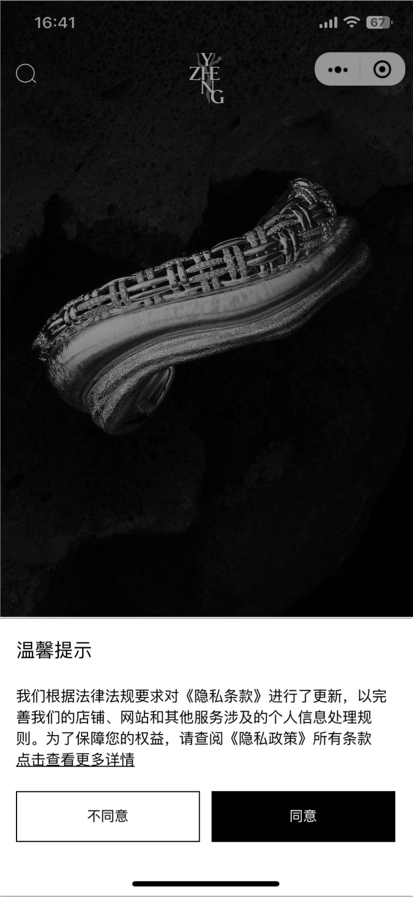
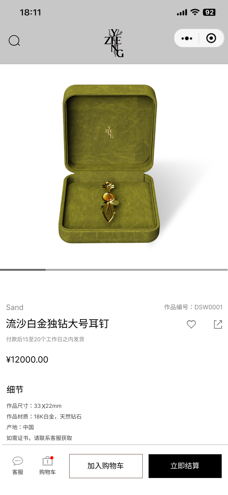
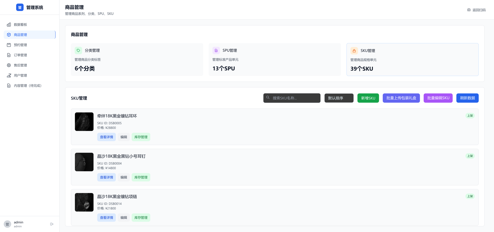
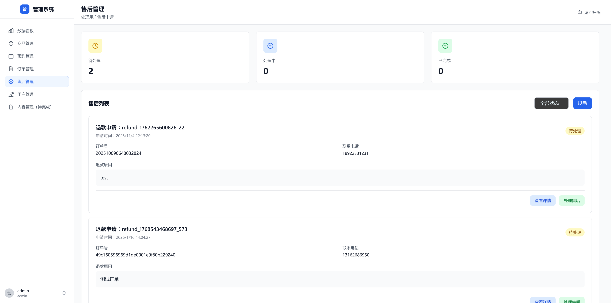
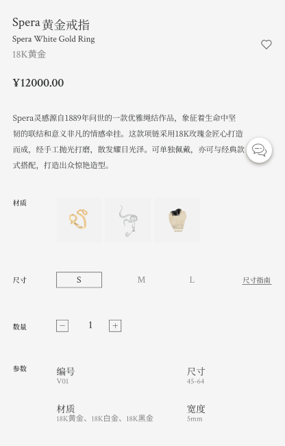
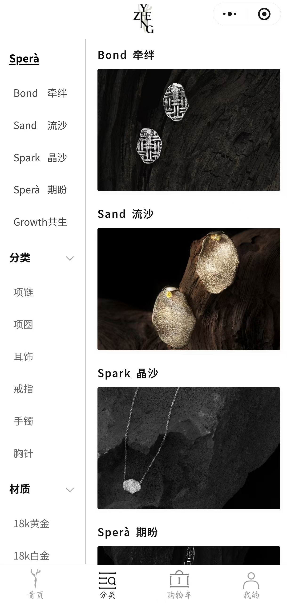
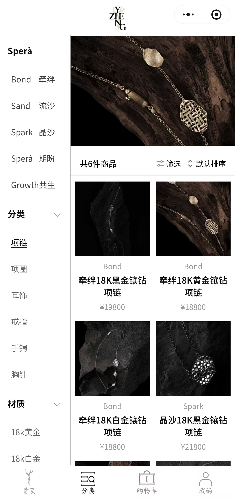
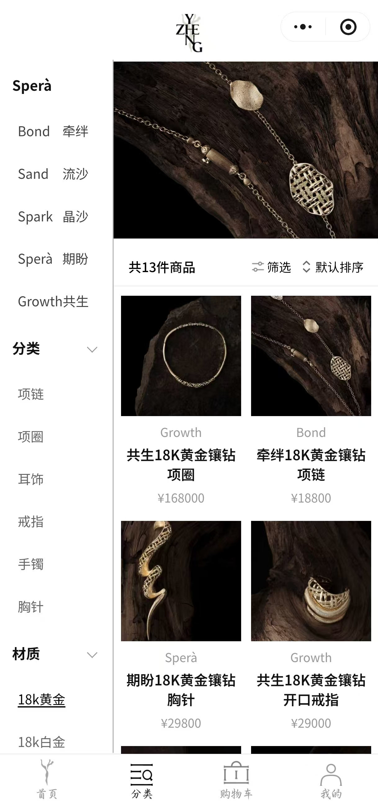
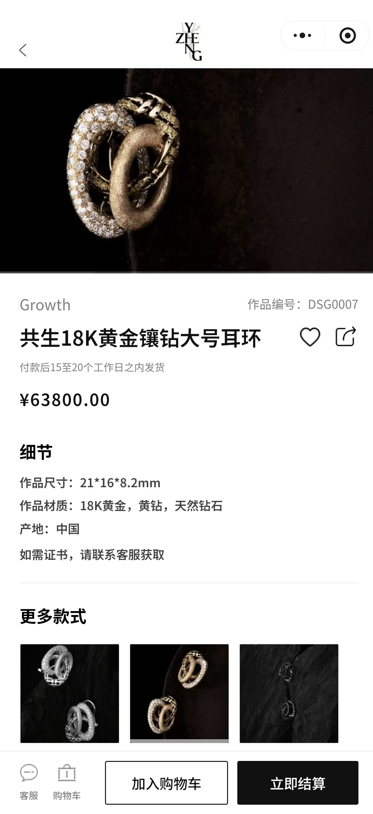

商品颗粒度可管理、可展示、可履约
Business & Functional Analysis
从业务闭环到系统规则：把需求拆成流程、对象、状态和验收条件。
以珠宝电商小程序和后台管理系统为例，将业务链路拆解为角色、字段、状态机和异常路径，形成可供研发、QA 和业务方对齐的需求说明。
核心产出
业务与功能分析、现状流程文档化、目标流程设计、跨角色需求对齐、业务用例与验收条件梳理。
业务流程建模
需求规格拆解
B 端状态机
SKU/SPU 规则
UAT 用例意识
Requirement Map
从业务目标到可交付需求规格
这个项目的重点不是“做了一个商城”，而是把传统珠宝品牌的线上触达、信任转化、订单履约和数据沉淀转化成系统可理解、可开发、可测试的规则集合。
完成标准产品单元与规格关联
C 端小程序 + B 端后台管理系统
从展示页升级为可交易系统
01 / Current & Future Process
把业务现状整理成系统可执行流程
项目从官方微信小程序商城和后台管理系统切入，目标是打通“公域引流 → 私域留存 → 线上成交 → 数据沉淀”的主流程。我的重点是把业务链路拆成角色、动作、系统反馈、数据对象和验收点，帮助研发与 QA 理解真实业务用例。
用户侧解决信任和转化
让高客单价珠宝从“看起来好看”走到“敢咨询、敢收藏、敢下单”。
后台侧承接履约和运营
让商品、订单、售后和预约进入统一规则，减少人工沟通成本。
02 / C-side UX
高客单价商品的信任构建与转化漏斗
珠宝是高客单价、低频消费品，用户在线上决策阻力大。设计重点不是堆功能，而是降低不确定性：用视觉质感建立信任，用服务入口消除疑虑，用心愿单承接轻决策。
转化策略
信任建立实拍图 + 关键信息前置，降低线上购买的不确定性。
轻决策承接用心愿单承接“先收藏、再咨询”的非即时购买路径。
支付反馈即时金额计算和状态反馈，减少下单过程中的等待焦虑。
隐私合规首次体验纳入隐私确认，避免上线后合规返工。


03 / B-side System
后台中枢：状态机、商品管理与订单治理
B 端不是“管理页面集合”，而是业务规则的承载层。后台设计重点在订单状态流转、售后分流、商品上下架、规格维护，以及让运营和财务可以按一致规则处理订单。
后台设计重点
待付款
待发货
待收货
已完成
售后分流
状态节点用系统状态替代口头规则，减少运营处理歧义。
对象分层商品、订单、预约三类对象分开管理。
异常隔离售后流程独立，避免影响主订单链路。


04 / Iteration
基于体验视角推动 SKU/SPU 架构重构
初期上线后发现 SPU 数量少，传统聚合展示让前端“货架”显得单薄，影响用户浏览意愿。为此主动推动从 SPU 聚合展示到 SKU 独立平铺的重构。
重构判断
Before
SPU 聚合展示
货架显得单薄，用户浏览路径偏深。
After
SKU 独立平铺
提升商品丰富度感知，缩短发现路径。
触发点测试和反馈显示商品丰满度不足。
成本控制底层关系不大改，只重构列表接口与组件映射。





05 / Review
复盘：从交付结果提炼可迁移能力
项目最终完成全链路系统基建，支持企业内部客户和种子用户下单验证，完成 45 SKU / 13 SPU 的商品流转落库，并建立跨组织 SOP。
踩坑与反思
需求边界三方会议 + 唯一接口人，避免 DDL 和职责漂移。
合规周期支付、权限、上线审核前置成里程碑。
商业与体验保留品牌表达，同时加入跳过机制和加载优化。
对 AI PM 的迁移价值
传统项目训练出的系统拆解和交付控制能力，可以直接迁移到 AI 项目中的需求边界、治理机制和上线验收。